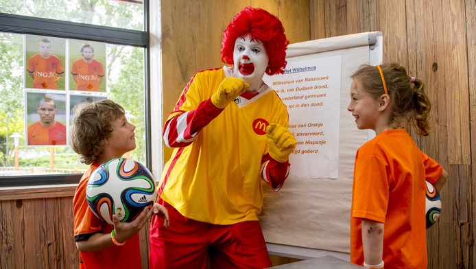
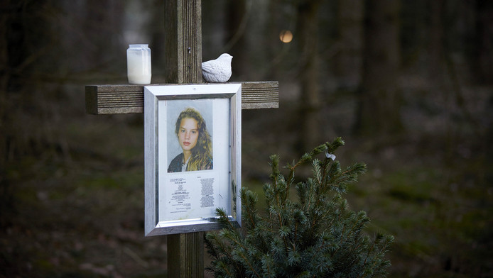

Kritiek op Wiebes over aanpak vertrekregeling zwelt aan
Staatssecretaris Eric Wiebes (Financiën) krijgt steeds meer kritiek over de misstanden bij de Belastingdienst. Oppositiepartijen nemen geen genoegen met de manier waarop hij er tot nu toe mee omging. Morgen buigt de Kamer zich over de kwestie.lees meer.

Horrorclowns terroriseren buurt
McDonald's in Nederland heeft vanwege alle ophef rond horrorclowns besloten om de optredens van clown Ronald McDonald tijdelijk te staken. Eerder werd al bekend dat de clowns bij Amerikaanse vestigingen niet meer ingezet worden.lees meer.

halfbroer nicole: hier zit een man die mijn zus heeft verkracht
Na 21 jaar is het einde in zicht van de langslepende rechtszaak omtrent de dood van de in 1995 vermoorde Nicole van den Hurk. Het Openbaar Ministerie komt vandaag met een strafeis.lees meer.
CDA wil ouderen flink compenseren na zware jaren
Het CDA wil ouderen met een klein pensioen 'substantieel compenseren' voor de achterstand die zij hebben opgelopen door het kabinetsbeleid van de afgelopen jaren. Dat blijkt uit het verkiezingsprogramma, dat vanochtend is gepresenteerd. Hoeveel ouderen erbij zouden moeten krijgen is niet duidelijk.lees meer.